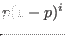

Next: Systematic Search Up: Optimization Algorithms Previous: SPSA Contents
| Name | Description |
|---|---|
| selection | The type of selection mechanism to use to make new populations. Available are ``Tournament'' and ``RouletteWheel''. Tournament selection is the default |
| tournament-size | The number of individuals to use for tournament selection. Applies only when selection is ``Tournament'' |
| tournament-probability | Probability with which an individual
is selected from a tournament:
 with |
| mutation-probability | The probability with which to mutate an
individual. You can use a mathematical
expression for this setting and use
the variable |
| mutation-rate | The maximum amount of mutation as a fraction
of the parameter space. You can use a mathematical
expression for this setting and use
the variable |
| crossover-probability | The probability with which to use
cross-over to create a new individual
from two selected parent individuals.
You can use a mathematical
expression for this setting and use
the variable |
The GA implementation supports both real valued as discrete valued parameters.
Jesse van den Kieboom 2014-02-26